I currently work as a Software Engineer at Ocado in the bot motion control team.
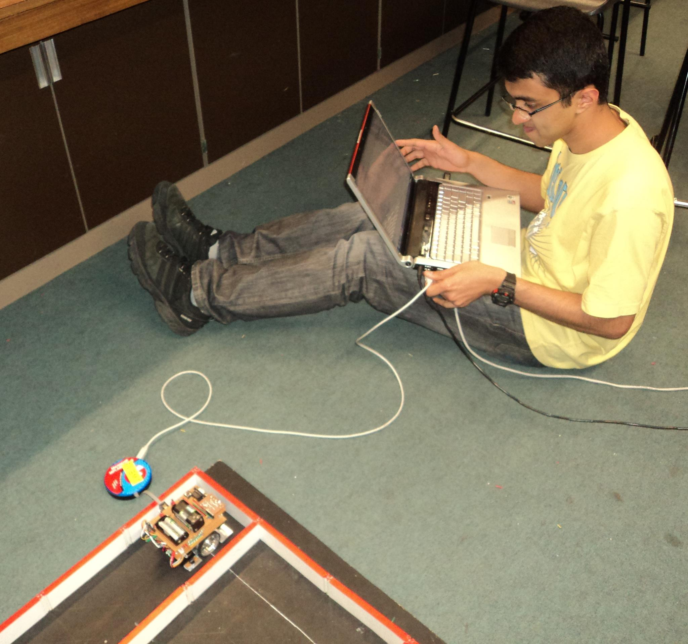
Interests
I find the following domains interesting because they make use of maths and physics to describe and solve problems.
Optimisation based methods like LQR, MPC to solve control problems
Probabilistic methods for state estimation like the different Bayes filters
Classical computer vision methods for object segmentation and detection
Especially in the fields of manipulation and environment mapping.
Motion (trajectory) planning
These interests would need to be backed up with:
Simulation
Embedded programming on hardware
Data analysis
I don't mention deep learning as an interest for now as it takes away the physics component for me.
Where am I in my career
I started off developing proof of concepts in the embedded sensors domain. From a technical standpoint, this involved:
Evaluation of sensors
understanding the physical problem to be solved
the best type of sensor for the problem
evaluating off-the-shelf sensors
designing the electronics
both analog and digital. in some cases this involved mechanical design as well
writing firmware that allowed smooth transfer of data
designing real-time algorithms for doing useful things with the data based on the purpose of the device
post data analysis
Overtime, my desire to get back into core robotics has grown. My interest, these days, center around:
Design of control systems for underactuated systems (includes 3D kinematics and dynamics)
Simultaneous localisation (based on bayes filters) and mapping in unstructured environments
Path planning in unstructured environments
Computer vision
I haven't yet delved into deep NNs, but I am very impressed by transfer learning i.e. getting a network trained in a particular domain to work in an unrelated domain and it's something I would be keen to explore in the future.
In my current role, I do a lot of work in the design and deployment of motion planning, control and localisation methods for fleets of bots in structured environments and I am very keen for the challenge that unstructured environments pose.
Industry experience
Ocado
Proposed a real-time method to adaptively tune the feed-forward coefficients for a fleet of bots. This was then successfully tested as a proof of concept and its implementation seen through till production.
Improved the real-time trajectory generator for fast movements along linear axis.
Carried out detailed analysis and improved the localisation method using simple IR sensors.
The grid is made of cells of supposedly fixed lengths, but they are not always accurate. The bots have IR sensors on all 4 sides that point downwards and can be used to detect cell-crossings (movement from gap to track to gap etc). But, they are not always mounted correctly. The bots have a passive fifth wheel which should give an estimate of the bot's position, but it is not always accurate due to indentations on the tracks. With some filtering (exponential smoothing, jitter compensation, disturbance rejection, low-pass filtering) and non-volatile memory retention, the 2 sensors can be used to estimate the position of the bot at any given time.
Helped in the initial modeling of a hoist system.
Heavily involved in performance investigations and rearchitecture of the firmware code.
Advanced Fibreoptic Engineering Ltd.
An optical interrogator, helpful in sensing strain or temperature differences, is useful in structural health monitoring systems. In the below project, a Fiber Bragg Grating (FBG) laser was used. The laser had to be swept through a range of wavelengths (40k) per second. Based on the physical property of the medium (say strain), the received optical signal peaked at different wavelengths.
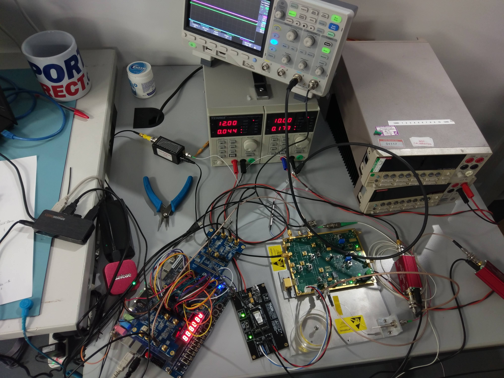
Initial stages of the interrogator project
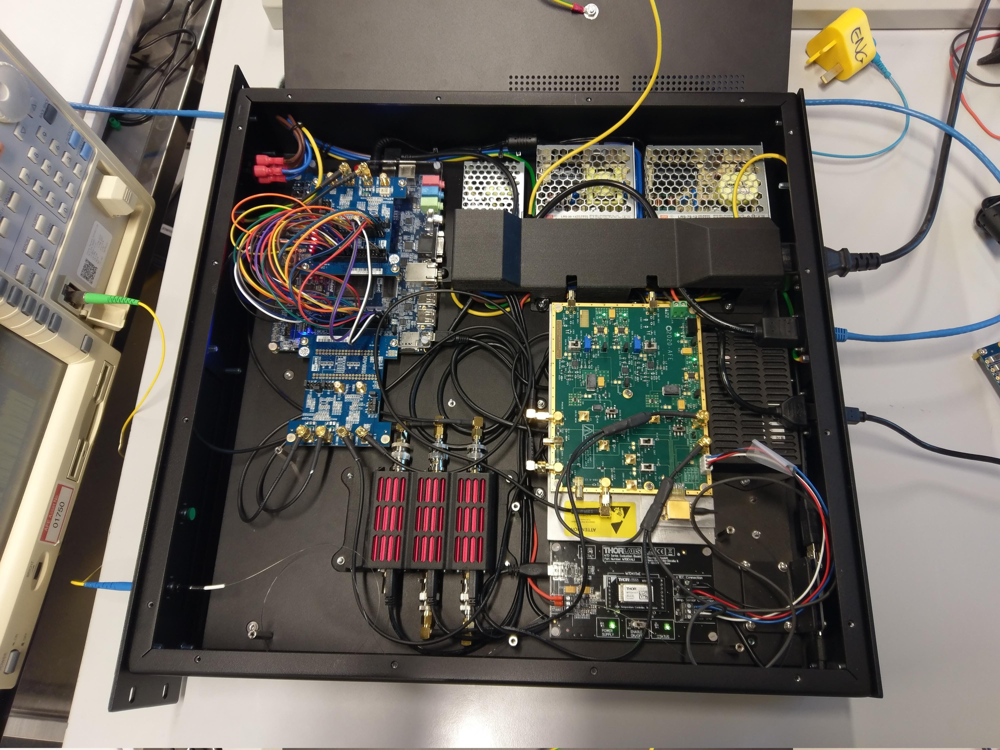
Inside the box of the interrogator
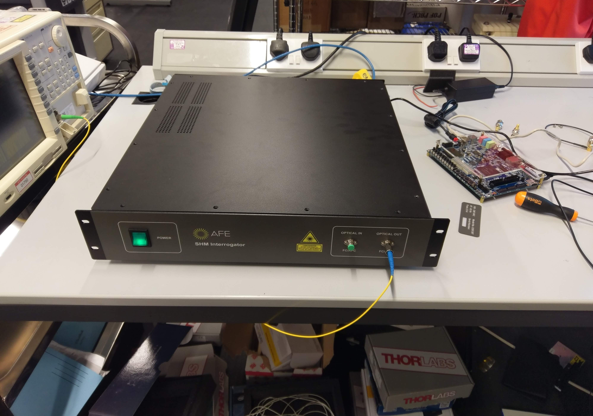
Finished product
Dyson
I worked as an Embedded Electronics Engineer in the Tech Research team within the broader division of New Products Innovation. For my first project I designed a mechanical contraption (3d printed) coupled with a strain gauge (in a wheatstone bridge format) to detect deflections when moved over an object. This was a proof of concept.
For my 2nd project, I was involved in evaluating different computer vision techniques for detecting gaps in materials. This involved:
Selecting the projection pattern
Fringe lines vs IR dot pattern similar to the ones used by the iphone for face recognition. For a surface with no sharp undulations, this method provides a form of texture that help computer vision algorithms detect features in the surface.
Decision between 2 vs 1 camera
Decision between cameras
Test of image segmentation algorithms (different kernels)
For my 3rd project, I worked on designing the communication interface between a new camera (not yet out in the market) and an FPGA so that we could stream videos quickly. Computer vision algorithms for object detection and segmentation were implemented by other team members over the video stream.
For my 4th project, I worked on 3 sensors in parallel:
Spectral sensing
The aim was to detect change in material properties as it underwent a change in temperature. I assisted the mechanical team in the setup of the sensor (a spectral detector of a range of wavelengths) and in the post analysis of the signal.
Fringing electric fields
This had to be desinged from scratch. A concept very similar to how capactive mobile touch screens work was designed using conductive plates with a thin non-conductive substrate on top. This was designed as a proof of concpet to detect moisture in materials.
Infrared sensing
Created a proof of concept (mechanical setup) to detect the presence or absence of moisture using infrared wavelengths. An emitter/detector setup had to be created along with a transmission medium for the light to pass through and interact with the water droplets.
Whilst I cannot disclose any information on the projects I worked on at Dyson, I can provide pictures of a fun comptetion our team took part in. We were supposed to create a bot that can deliver cargos (small cardboard boxes) to the right locations whilst also sabotaging and avoiding getting sabotaged by other bots. I designed the 3d printed belt-gears and the CNC-cut wheels. We came second.
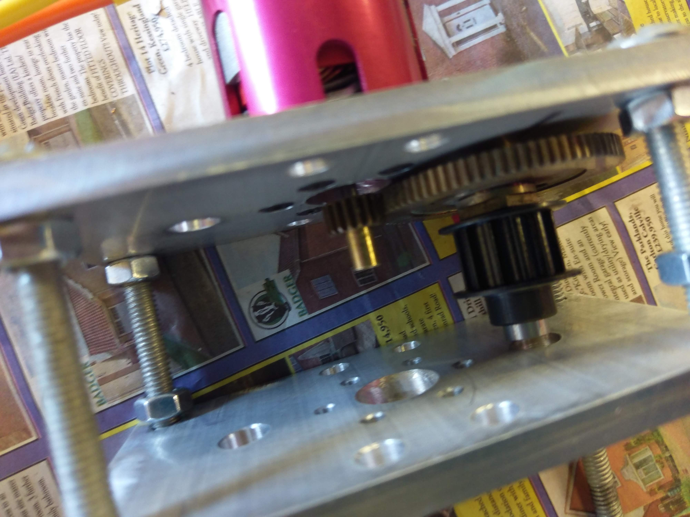
Motor drive gear assembly
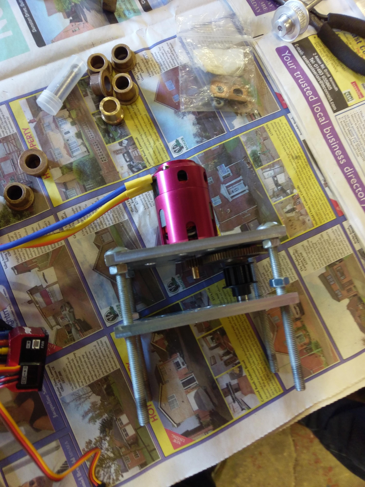
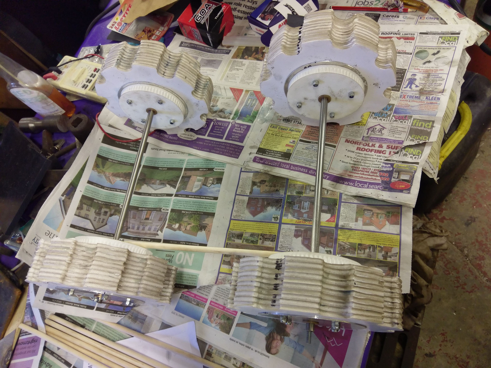
Wheels with 3d printed belt tooth gear
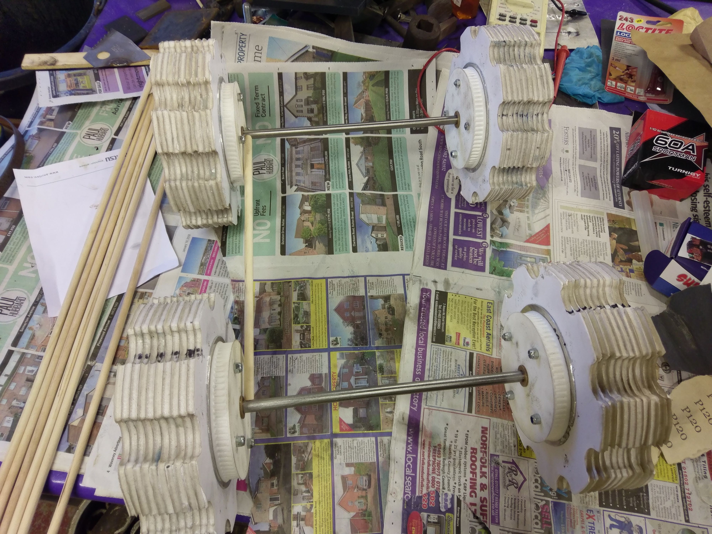
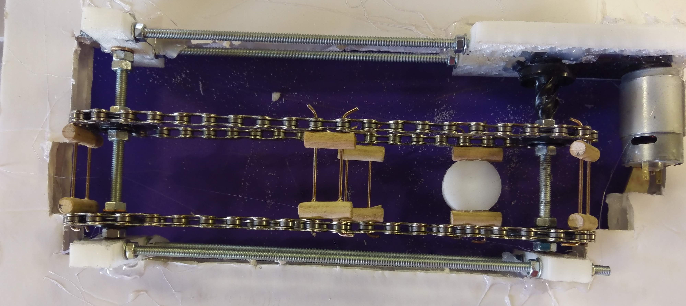
Parcel delivery system
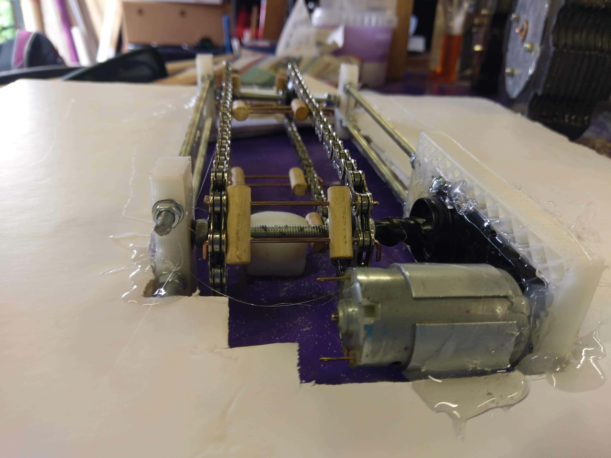
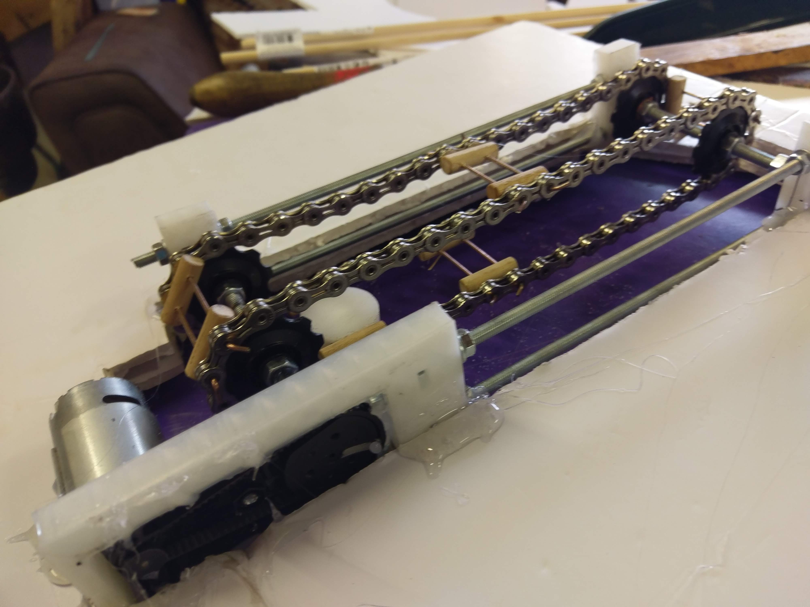
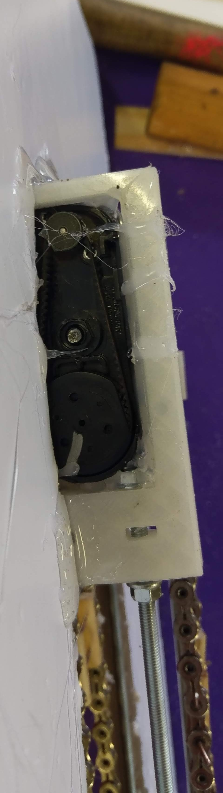
Belt drive of the parcel delivery system
First bot tests
Renishaw
I worked as an embedded software engineer in an R&D division in Scotland for 3+ years. I was responsible for designing the underlying software architecture for the interaction between an ultrasound probe and Renishaw's proprietary CMM (Coordinate Measurement Machine) controller.